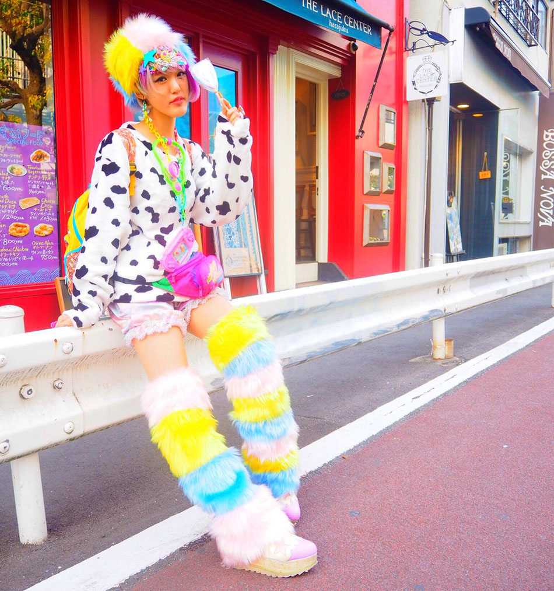
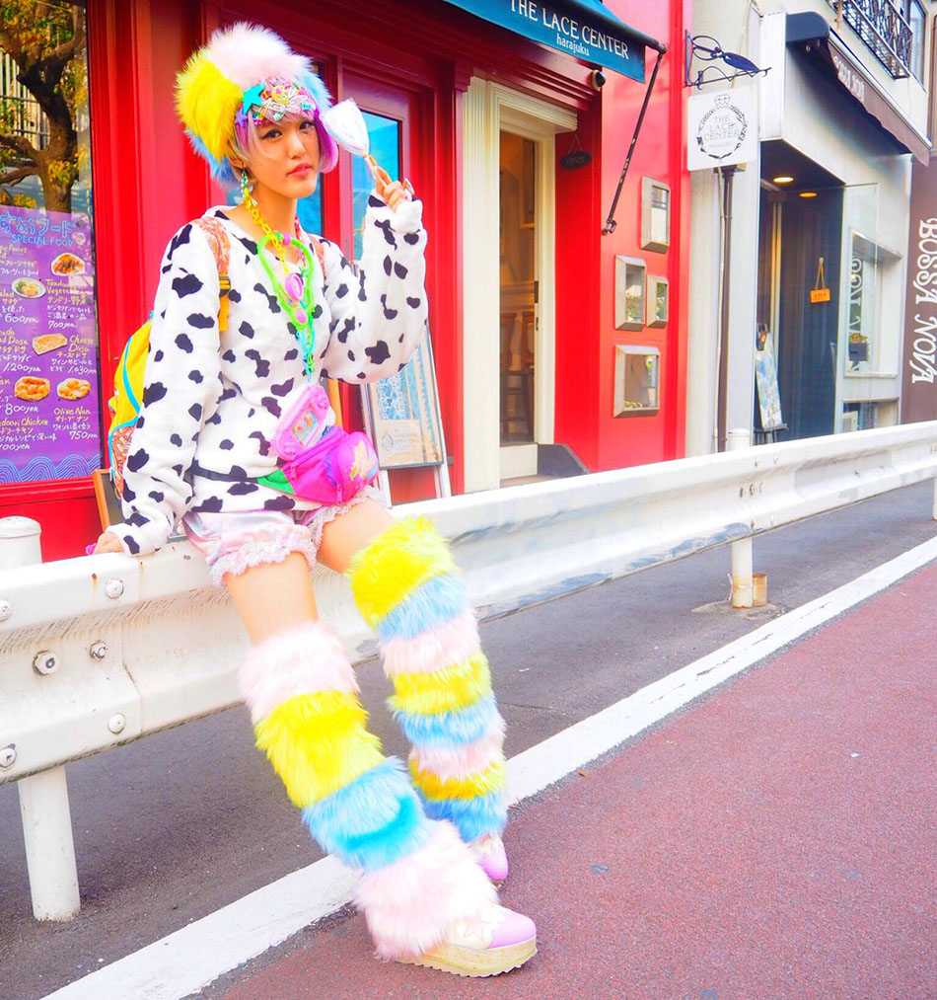

Decora

Decora, coming from the word decoration, is marked by an excessive use of accessories. These accessories typically consist of hair clips and bracelets but can also include stickers, rings, necklaces, and so on and so forth. Oftentimes, Decora practitioners dress in bright colors, but there are darker versions of Decora. The specific articles of clothing used are not as important as the overall colors and themes in Decora. Tutus, leg warmers, arm warmers, and knee high socks are popular, but not necessary to dress Decora. Makeup is used to achieve a fun and childlike appearance and can also be accessorized through the use of stickers, glitter, and crystals.
This style’s history can be traced back to a Japanese idol from the 1990s named Tomoe Shinohara whose style resembles Decora today, but more often used hats instead of hair accessories. Her fans took after her style and some were photographed in Harajuku and featured in Fruits! magazine who eventually would coin the term Decora to describe their style.
 



Lolita

Lolita is inspired by the style of the Victorian and Rococo periods. Ruffles, lace, and bows, among other details often associated with girls’ clothing, is a mandatory part of Lolita styles, although different sub-fashions of Lolita use these elements in varying degrees to achieve a variety of looks. Petticoats are a must to achieve the full skirt look. There are strict rules within Lolita about the pieces and brands that are considered Lolita so one should definitely do some research before attempting the Lolita style for themselves.
Despite sharing the name of Vladimir Nobokov’s book Lolita, there is no inherently sexual aspect to this particular style. Discourse around the novel took a different turn in Japan due to the romanticization of girls’ culture thus giving the word a positive connotation and coming to mean a sweet and adorable adolescent girl with no sexual connotation. The origins of Lolita’s style can be traced to the 70s and 80s, taking elements from Natural and Otome Kei styles, but came to be what we know it as today in the late 1990s. Practitioners of Lolita were photographed for magazines such as Fruits magazine, allowing it to grow in popularity.


Gyaru

Gyaru, or “Gal” fashion is a direct rebellion against traditional Japanese beauty standards. Gyaru is marked by tans, big and bleached or dyed hair, and rebellious, trendy clothing. Within gyaru, there are many sub-styles that embrace the different elements of gyaru in different ways. Ganguro is marked by a deep artificial tan, bleached hair, and the use of light makeup on the lips and around the eyes. Meanwhile kogal is more centered around clothing featuring a school uniform with a very short skirt worn no matter the season.
Gyaru fashion was born from another fashion movement known as Bodikon, or “Body Conscious” which emerged and grew to be a nationwide trend in the 1980s. Bodikon was originally a modest yet sexy style for office ladies marked by form-fitting clothes that highlighted the lines of the body. In the 1990s though, the style began to radicalize and become more sexy and revealing while still being comparatively modest to other nightlife fashions of the time, partially due to magazines of the time misrepresenting the style and from that radicalization, Gyaru was born.